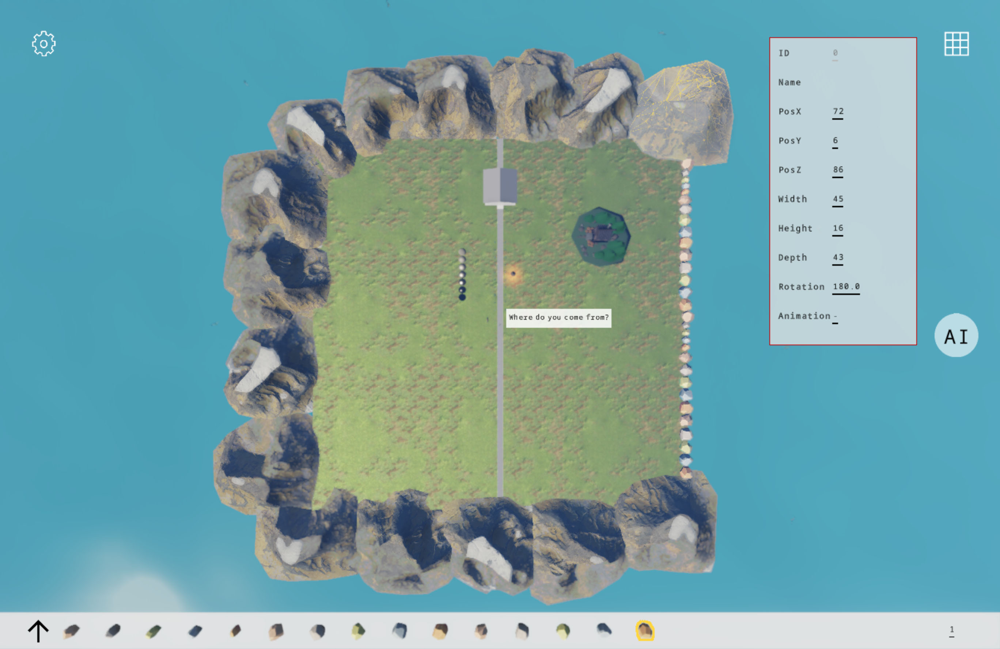

Apps/Engine
An island at 1920×1080, with every rendering feature switched on and every knob exposed. This is the application the screenshots come from and the application most of these guides were written by reading.
How it configures itself
The entire initialization is a constructor. Two quality defaults are overridden and the camera is set; everything else is engine default.
internal App()
{
Title = "SeasonEngine";
StorageService.DirectoryBase = "SeasonEngine";
BackgroundColor = Season.Basic.Colors.White;
BasicResolution = new Vector2(1920, 1080);
RenderQuality.DefaultGlobalIllumination = GiMode.Ddgi;
RenderQuality.DefaultAerialIntensity = 12f;
ResetCamera();
}Both overrides carry a paragraph of reasoning in the source. The aerial intensity of 12 is the one worth reading: it is a lerp weight rather than a multiplier, the physical value is 1, and at 1 the distant mountains gain about two units of blue out of 255 in a world only a few hundred metres across. There is a measurement in the comment, taken with the day-night phase frozen.
Camera.Far = 1300f is not a round number chosen for comfort.
Two things have to fit inside it: the skybox has a half extent of 450 metres, so the longest
ray toward a corner is about 779 metres, and the sea is 1400 metres square, so the farthest
clamped camera position sits about 1240 metres from the most distant sea corner. A smaller
far plane cuts a strip out of the skybox top or reveals a seam at the bottom. The field of
view is MathF.PI * 13 / 36f — 65 degrees.
Four modes
An enum Mode { Show, Play, Edit, Debug } decides which panels are
visible. It defaults to Play, and the update loop reads it every
frame rather than rebuilding anything.
| Mode | What it shows |
|---|---|
Show | The scene with the UI out of the way — what the screenshots use. |
Play | Direction pad, skill button, settings, AI button. The default. |
Edit | The object picker and the painting palette, for placing assets. |
Debug | The Views panel: compute outputs on screen as sprites. |

Edit Debug
Debug
The scene, panel by panel
Create() adds panels in load order. Each one is a self-contained
class in Apps/Engine/Panels, and each is a worked example of one
engine feature.
| Panel | What it does | Feature it demonstrates |
|---|---|---|
CelestialLighting | Drives sun and moon, ambient, weather and the SH ambient update. | Day-night cycle, SceneLighting |
Sky | Skybox and procedural sky selection. | SkyMode, atmosphere |
Ground, Sea | Grass and road, and a procedural sea surface. | Custom meshes, materials |
Rocks | Fifteen rock variants pulled out of one glb, scattered along the east coast, some half-buried. | InstancedMesh3D, background loading |
Mountains | A ring of background mountains from four variants, with an east-west gap left open so sunrise and sunset are visible. | Instancing at range |
Robots | Ten robots in two columns playing different clips, with speech bubbles above them. | InstancedModel animation, MSDF text |
Birds | Twenty seagulls with straight and circling behaviours, flock separation, obstacle avoidance and a pitch-and-roll pose solver. | Instanced animation driven by simulation |
Player, Direction, Skill | A character, a direction pad with world and character movement modes, and a long jump with a parabolic arc and collision. | Model animation, input, camera rigs |
House, Room, StreetLight, Ball, Sphere | Individual props and an interior. | glTF loading, punctual lights, PBR |
Painting | A bottom toolbar that previews a glb, anchors it to the cursor and places it in the scene on click. | Screen-to-world placement |
Setting, SettingPanel | A button and the runtime settings screen behind it. | RenderQuality.Current, WorldSettings |
Views | Debug-mode sprites bound to compute output textures by name. | ComputeEffect outputs |
Logo, AIButton | Branding, and the entry point to the AI panels. | Overlay controls |
Apps/Engine/Management holds the two behaviours that are not
panels: PlayerCollider and
OcclusionFade, which fades geometry that comes between the camera
and the player. Rocks and
Mountains load through the engine's
RequestLoad queue rather than blocking the first frame.
Ten compute effects, in order
RegisterEffects() runs first in
Create(). Registration order is execution order within a phase, so
this list is also the frame.
PlasmaEffect // FrameStart - compute baseline smoke test
SceneColorCopyEffect // AfterScene - downsampled scene colour
TaaEffect // AfterScene - must precede bloom
BloomEffect // AfterScene
DepthViewEffect // AfterScene - debug view
GtaoEffect // AfterScene - publishes FrameSchedule.AoTexture
VelocityViewEffect // AfterScene - debug view
Sdf3DViewEffect // FrameStart - slices a 3D volume for display
DdgiEffect // AfterScene - probe and SDF volumes
SkyAtmosphereEffect // FrameStart - sky, cloud noise and aerial LUTs
Every one of these is registered with an if around the return
value, and the debug control that would display its output is only added when registration
succeeded. That is the pattern to copy: on a backend without the shader source, the effect is
simply absent and nothing else changes. See
Compute effects.
The settings screen
SettingPanel is the largest class in the application and the most
useful one to read if you are building your own settings UI. It binds directly to
RenderQuality.Current and
WorldSettings.Current and writes on change.
Exposed at runtime: mode, movement mode, field of view, day-night speed and start hour, movement step, anti-aliasing mode, DDGI on and off, cascaded shadow parameters, GTAO, and the shadow normal offset. Values that cannot change after startup are not given sliders — which is the rule worth copying, since a control that silently does nothing until next launch is worse than an absent one.
Because RenderQuality.Current lives inside persisted settings,
everything changed here survives a restart. See
Render quality.
Picking and editing
The ObjectPicker panel is configured with two lists —
Targets for individual controls and
InstancedTargets for instanced ones — and handles the ray
cast, the outline and the transform readout itself. Combined with
Painting, that is the whole in-app editing loop: click to select,
read the numbers, place a new asset where the cursor is.
This is the answer to not having an editor. It is not an editor — but it turns "guess a coordinate, rebuild, look" into "click the thing, read its coordinate". See Picking, highlighting and editing.
Building it, honestly
Engine.csproj carries an unconditional
<ProjectReference Include="..\..\..\SeasonAI\SeasonAI.csproj" />,
and the AI project is not in this repository. Its own reference to
Season.csproj is commented out, so the engine arrives
transitively through that reference — which means removing the AI reference is not a
one-line change. There is also a post-build target that copies ONNX Runtime binaries from a
sibling cudacudnn-runtime directory on Windows.
To run something today: Samples/Creator builds from a fresh clone with
no external dependency, or take the packaged Windows build from
Download. To build this one, restore the
Season.csproj reference and delete the AI reference along with the
AIButton and AIPanel usage in
Create() — the panels themselves are already excluded from
compilation by a Compile Remove.
Packaging on Windows is MSIX with SelfContained and
WindowsAppSDKSelfContained both true, which is why the Store build
is large and why it does not need a runtime installed. Target frameworks are
net10.0,
net10.0-android,
net10.0-ios,
net10.0-maccatalyst and, on a Windows host,
net10.0-windows10.0.19041.0.